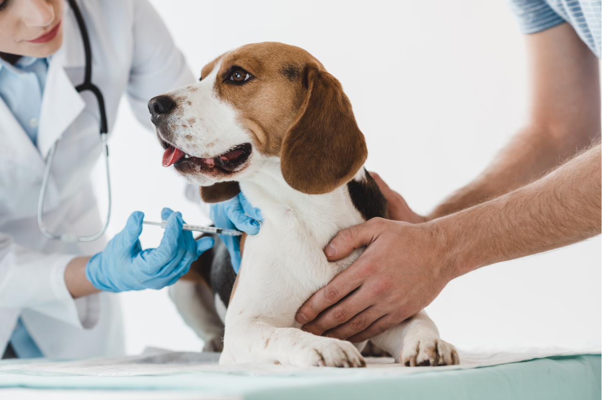
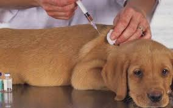
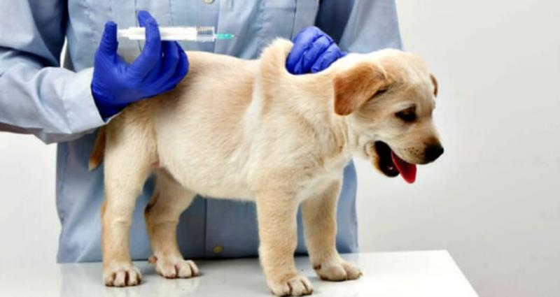

Assim como pessoas, animais adoecem e precisam de prevenção e tratamento. Por isso dedicamos essa seção especialmente a informar um pouco sobre alguns cuidados com a saúde de seu cãozinho: doenças comuns, tratamentos e vacinas! Assim quando você for adotar um companheiro (leia mais sobre nossa política de adoção aqui) ou for cuidar de um que você já tenha, seu pet tenha toda a assistência necessária para ter uma saúde de ferro!
As doenças mais comuns
Quando compramos ou adotamos um filhote de cachorro, temos que ter muito cuidado a saúde do animal. É preciso cuidar bem dos pets para evitar doenças caninas que podem causar sequelas e até mesmo a morte. O animal, em seus primeiros meses de vida, é frágil e precisa de cuidados.
Por estarem começando a vida, são muito suscetíveis a doenças, uma vez que o sistema imunológico ainda não está completo. Os filhotes dependem dos anticorpos que recebem das mães, e como alguns são desmamados com cerca de um mês, acabam ficando vulneráveis.
Se você é um pet lover, precisa ficar atento a esses cuidados. O animal deve ter acompanhamento veterinário desde o começo e seguir as recomendações sobre imunização e vermifugação. Neste artigo vamos mostrar quais são as principais doenças caninas e como proteger o seu cãozinho.
Todas as doenças acima são muito graves, podendo levar à morte de seu animalzinho. Há formas de tratamento para a maioria, porém o mais ideal é prevenir que seu pet desenvolva essas doenças.
A vantagem é que atualmente a maioria das doenças possuem vacina, logo garantindo que seu animalzinho receba as doses ele já estará muito seguro e afastado de doenças! Caso queira conhecer mais sobre as vacinas, seus benefícios e como consegui-las, clique aqui.
Outros probleminhas
Além de doenças mais graves como as mencionadas acima, podemos abordar outras que, apesar de também possuírem sua gravidade, são mais facilmente tratadas e previnidas.
Apesar dessas serem algumas das doenças comuns em cachorros, outros problemas também podem atingir seu amigo, como, por exemplo, a cinomose. Independentemente da enfermidade, um veterinário sempre deve ser consultado. Mas como o melhor é prevenir, alguns cuidados básicos no dia a dia podem ser tomados:
Vacinas

Assim como os humanos, os cachorros também podem sofrer com uma série de doenças capazes de ameaçar tanto a saúde e a vida deles , como a de seus donos. Para evitar esse tipo de dor de cabeça, é indicado que as vacinas para cachorro sejam aplicadas corretamente, seguindo o calendário de vacinação. Vale lembrar que todo o processo deve ser organizado e acompanhado por um médico veterinário.
Na verdade, a importância da aplicação das vacinas para cachorro já é bem conhecida pelos tutores. O que muitos ficam na dúvida é em relação as datas que devem ser cumpridas, quais são as mais importantes e para que elas servem. Confira a resposta para essas perguntas e algumas dicas para a vacinação de seu cão.
Principais vacinas
As vacinas que devem constar obrigatóriamente no calendário de vacinação do seu cachorro são as vacinas múltiplas ou polivalentes, v8 e v10, e a vacina anti-rábica. As vacinas v8 e v10 protegem os cães de sete doenças consideradas graves: cinomose , hepatite infecciosa canina, parvovirose, leptospirose, adenovirose, coronavirose e parainfluenza canina. Já a vacina anti-rábica protege os cães contra a raiva. Algumas dessas doenças são consideradas zoonoses, ou seja, podem ser transmitadas para o homem.
Além das vacinas v8 e v10 e da antirrábica existem outras doses de imunização que tambémsão importantes. É o caso das vacinas contra a leishmaniose, a giárdia, a tosse dos cães e pulgas. Vale lembrar que a aplicação ou não e a organização dessas vacinas estará no calendário de vacinação do seu cachorro, feito por um médico veterinário.
Para fins de especificação, organizamos em tópicos as vacinas e suas respectivas importâncias na saúde do seu pet.
Vacina V8
Vacina V10
V8 X V10
As vacinas V8 e V10 são as chamadas múltiplas ou polivalentes. A diferença entre elas é a cepa combinada da bactéria inativada de Leptospira spp. contida na formulação. Existem mais de 200 tipos de leptospiras mas nem todas estão presentes no Brasil ou afetam cães. Dessa forma, os sorogrupos variam de região para região. Por isso, é importante se informar quais são os mais comuns onde o cão vive ou mesmo frequenta ocasionalmente.
Vacina antirrábica
A raiva, ou hidrofobia, pode acometer todos os mamíferos – inclusive humanos, afetando cérebro e medula espinal. Causada por um vírus, se aloja nos nervos e vai para as glândulas salivares, onde se prolifera. Daí a temida espuma ou baba excessiva saindo pela boca – é pela saliva que a doença é transmitida. Incurável, a raiva tem rápida evolução e é fatal. Os principais sintomas, que começam após o período de incubação, são irritabilidade, desorientação e agressividade. Progressivamente, a doença vai se agravando. Não há tratamento para cachorros, apenas para humanos. E como a raiva afeta também os animais silvestres, a melhor forma de erradicá-la é protegendo seu cãozinho com a vacinação.
Vacina leishmaniose
Se o seu cachorro vive no litoral, costuma frequentar praias ou mora no interior de São Paulo, Nordeste e Centro Oeste do Brasil (áreas endêmicas), ele corre maior risco de pegar leishmaniose. A doença é uma infecção parasitária que afeta o sistema imunológico e se apresenta em dois tipos: cutâneo e visceral, sendo o último mais frequente nos cachorros. A leishmaniose é uma zoonose que pode ser letal e é transmitida dos cachorros (hospedeiros) para humanos com a ajuda de um mosquito, o vetor da doença. Além da vacina, outra forma de prevenção é o uso de coleira repelente. Cabe apenas ao médico veterinário recomendar se essa vacina é indicada ou não ao seu pet.
Vacina leishmaniose
Altamente contagiosa, a tosse dos canis também é conhecida como gripe canina, traqueíte ou traqueobronquite infecciosa canina. Ela pode ser causada pelos agentes virais parainfluenza e adenovírus, pela bactéria Bordetella bronchiseptica ou por uma combinação deles. A doença tem maior incidência no inverno e em climas frios. Os sintomas são bem parecidos com os da gripe humana: tosse, espirros, secreção saindo pelo nariz e boca, falta de apetite e o tratamento normalmente é bem-sucedido. Os humanos podem ser infectados pela Bordetella bronchiseptica caso estes estejam imunossuprimidos. A principal recomendação, uma vez que a vacina para tosse dos canis é opcional, é para cachorros que vivem com outros cães, que frequentam petshops, hospedagens, exposições ou provas esportivas.
Vacina contra giárdia

A giardíase é uma zoonose causada por um parasita que se aloja no intestino. A transmissão se dá pela ingestão de algo contaminado, como água, alimento ou algo que tenha entrado em contato com fezes contaminadas. A infecção provoca diarreia, dor abdominal, vômito, desidratação, perda de peso etc. Esses sintomas são comuns e podem ser confundidos com outras enfermidades, e o diagnóstico é feito através do exame coproparasitológico solicitado pelo médico veterinário. Alguns casos são assintomáticos e por isso é importante ficar atento porque a doença pode evoluir para um quadro fatal. Por isso, muito cuidado com o que seu pet come (uma graminha pode estar contaminada) e por onde anda. Embora opcional, a vacina contra giárdia é recomendada se o animal vive em um local com saneamento básico precário ou se tem muito convívio com outros cães.
Quando aplicar
A recomendação é que as vacinas comecem a ser aplicadas desde a fase filhote do cachorro, quando o organismo dele já puder receber as doses. Dessa forma ele estará protegido desde cedo e correrá menos riscos de pegar alguma doença. Geralmente a imunização inicial do cachorro começa aos 30 dias de vida com o uso do vermífugo , continua em torno dos 40 dias com a aplicação da primeira dose de v8 ou v10 e anti-pugas, se estende aos 60 dias com a vacina contra a tosse e vai até em torno dos 120 dias com a vacina anti-rábica. Durante esse calendário de vacinação há a repetição da dose de algumas delas, é o caso da v8 e v10, tosse e anti-rábica. É preciso ficar bem atento em relação a isso.
Caso todos esses prazos tenham sido perdidos pelo dono ou um cachorro adulto não tenha recebido as vacinas necessárias o procedimento é um pouco diferente. Eles receberão três doses das vacinas polivalentes v8 ou v10 e uma da anti-rábica. O mesmo serve para cachorro que não se sabe a procedência e se ele já foi vacinado, é o caso dos animais adotados da rua, por exemplo.
A necessidade de tomar outros tipos de vacinas além dessas vai depender da região onde o animal vive e da recomendação do veterinário.
Para organizar melhor essas informações, criamos um quadro com as informações necessárias das vacinas:
Dicas durante a aplicação

A vacinação nunca é algo confortável para o pet, é um processo doloroso e amendrontador para o seu bichinho. É claro que os donos possuem conhecimento da importância do processo, porém não o faz mais fácil de assistir. Por isso separamos no portal algumas dicas que podem ajudar a tornar a vacinação mais fácil e tranquila de ser realizada. Confira abaixo.